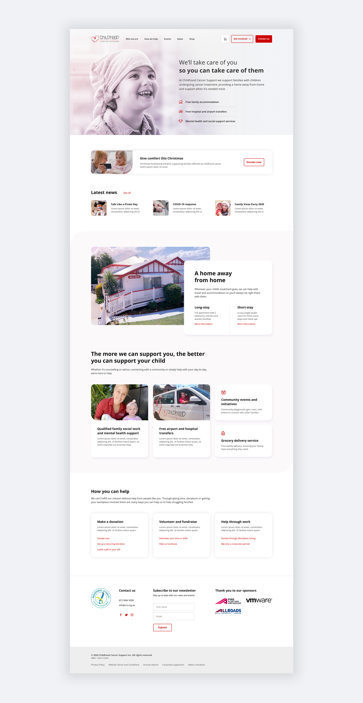

An information architecture and UX refresh to help inform and support families in need.
Childhood Cancer Support supports families with children undergoing cancer treatment, so this project presented a very delicate environment to understand and design for.
I chose to work on this as part of “Impact Day”, Deloitte’s annual day of volunteering.
Challenge
When a parent finds out their child has cancer, they are scared and don’t know where to turn. The design and content has to use the appropriate emotional tone and immediately communicate that Childhood Cancer Support (CCS) will take care of their family while they take care of their child.
CCS asked us to help refresh their website (primarily the homepage) so that families in need can clearly understand what the charity provides and easily reach out for support, and the general public can understand how to donate to or support the charity in various ways.
The website was built using WordPress, so with our small time frame in mind, we prioritised a full redesign and build of the homepage and smaller content-focused edits were made throughout the rest of the site.
Approach
Our team used a "tag team" approach to work through UX, content, design and build over a few weeks, rather than all of us working on a single "Impact Day". I had time available to take the lead for the bulk of the work at the beginning.
Discovery
I helped complete an initial UX audit of the existing website to identify and prioritise issues from the homepage through to lower level pages with suggestions for improvement.
We began with wireframes to explore initial UX and IA thinking. We focused on clearly presenting the services that CCS provides with 3 distinct pathways to entry, and provided a direct path to each service to find more information by using clearer call-to-actions and anchor links.
Testing
I created a baseline Tree Test to inform how the current Information Architecture (IA) was performing and documented 120 qualitative responses (from 60 participants) to define key insights and pain points, which informed our proposed IA.
I also had the opportunity to interview a team member within Deloitte Digital who had experienced her young child undergoing cancer treatment.
Design
I refined our wireframes into polished detailed designs across desktop and mobile, uplifting the charity’s brand with a modern look and feel yet remaining approachable with a softness to the visual styling, such as pink tones from the logo and rounded corners.
Integrating the charity's own photography reflected their personal touch and their community support network which is at the heart of what makes CCS unique.
I then worked closely with our 2 developers to hand over designs, discuss technical constraints and opportunities for interaction design, and review the build to ensure we produced a high quality result.
Result
The team at Childhood Cancer Support were extremely thankful for our help in improving their website in only a few weeks. They appreciated the new clean and modern aesthetic.
CCS is now equipped to update their content on the WordPress platform with the knowledge that the right content will be surfaced in the right way.
Users will be able to quickly understand who CCS are and the services they provide, and navigate the site with ease to find the right information and give or receive support.
